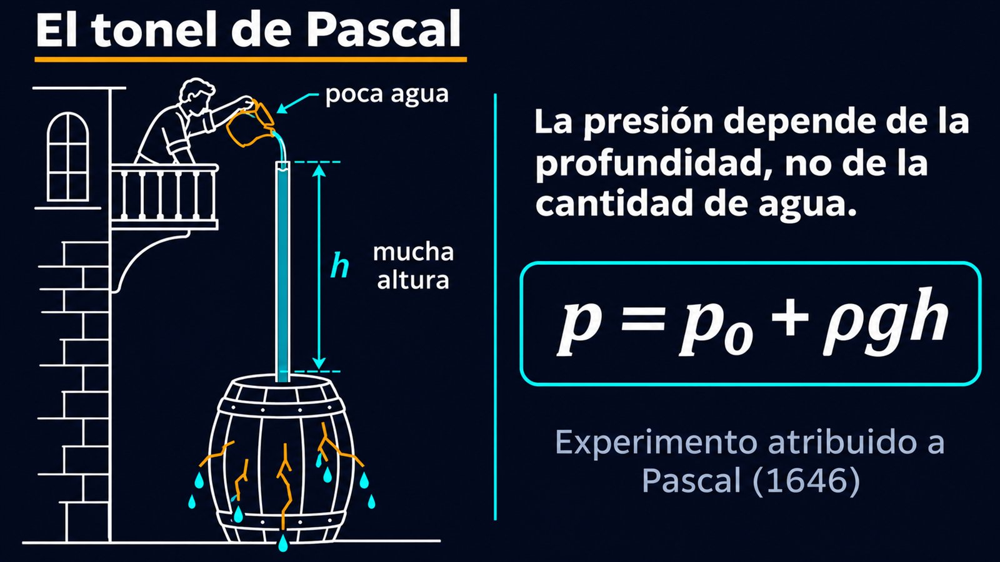

Poca agua, mucha fuerza: por qué al fondo de un recipiente solo le importa la altura
Tres recipientes tienen la misma base y están llenos de agua hasta la misma altura. Uno es un cilindro ancho, otro se angosta hacia arriba como un embudo dado vuelta, y el tercero es un tubo finito que se abre en una base ancha. ¿Sobre cuál empuja más el agua contra el fondo? La intuición dice que sobre el que tiene más agua. La física dice que el empuje es el mismo en los tres. Eso es la paradoja hidrostática.
La clave está en la ley fundamental de la hidrostática: la presión a una profundidad h es p = p0 + ρgh. Según OpenStax, la presión en un fluido depende solo de la profundidad, y no de la forma del recipiente [1]. Los apuntes de Metin Güner, de la Universidad de Ankara, lo dicen con un dibujo de recipientes de formas muy irregulares: la presión es la misma en todos los puntos de una misma línea horizontal, sea cual sea el tamaño o la forma del recipiente [2].
Una consecuencia directa son los vasos comunicantes: si un líquido puede pasar libremente de una parte a otra de un recipiente, sube a la misma altura en todas, porque si las presiones abajo fueran distintas el líquido correría hasta igualarlas [1].
Si la fuerza sobre el fondo no es igual al peso del agua, la diferencia la ponen las paredes. OpenStax lo muestra para el caso más simple: en un recipiente de paredes verticales, las paredes no pueden empujar al líquido hacia arriba, porque un fluido no soporta fuerzas de corte, así que el fondo carga con todo el peso [1]. Y la presión siempre empuja perpendicular a cada superficie [1].
Con paredes inclinadas, eso cambia el reparto (un razonamiento propio a partir de esos dos hechos). Si el recipiente se angosta hacia arriba, el agua empuja las paredes en diagonal, hacia arriba y hacia afuera, y las paredes la empujan de vuelta hacia abajo: el fondo soporta más que el peso del agua. Si se ensancha hacia arriba, las paredes sostienen parte del agua y el fondo soporta menos. Lo que pesa el recipiente completo en una balanza, en cambio, siempre es el peso del agua más el del recipiente: las fuerzas entre el agua y las paredes son internas.
El ascensor lleno de gente: en un ascensor con personas apoyadas en las paredes, el piso no carga con todos: parte del peso lo sostienen las paredes. Si en cambio el techo bajo empuja a la gente hacia abajo, el piso carga con más de lo que pesa la gente. En los dos casos, el ascensor entero pesa lo mismo: solo cambia qué parte de la estructura sostiene qué.
Según MacTutor, el matemático flamenco Simon Stevin publicó en 1586 un tratado de hidrostática, De Beghinselen des Waterwichts («Los principios del peso del agua»), que mejoró notablemente el trabajo de Arquímedes [3]. Muchos consideran que con esa obra fundó la hidrostática, al mostrar que la presión que ejerce un líquido sobre una superficie depende de la altura del líquido y del área de la superficie [3]. Es exactamente la paradoja: altura y área, no cantidad de líquido.
Unas décadas más tarde, Blaise Pascal estudió el equilibrio de los líquidos y la presión [4]. A él se le atribuye el famoso «tonel de Pascal»: un barril lleno de agua con un tubo largo y delgado encima, que se rompe cuando el tubo se llena, aunque se agregue muy poca agua. OpenStax lo presenta como una demostración de 1646 de los efectos de cambiar la presión en un fluido [5]. La lógica es la de la paradoja: el tubo agrega poca agua, pero mucha altura, y la presión depende de la altura.

Represas: la misma idea vale para una represa. En el ejemplo de OpenStax, la fuerza sobre una represa de 500 metros de ancho y 80 de profundidad es de 1,57 × 1010 N, apenas el 0,08 % del peso del agua del embalse [1]. OpenStax deja planteada la pregunta de qué pasaría si el embalse cubriera el doble de superficie con la misma profundidad [1]; con F = ρghA la respuesta es que la fuerza no cambia: a la represa le importa la profundidad, no la cantidad de agua que tiene detrás.
La paradoja hidrostática no es una contradicción: es una consecuencia directa de que la presión depende de la profundidad y empuja perpendicular a las paredes. Nos sorprende porque estamos acostumbrados a los sólidos, donde «más cantidad» quiere decir «más fuerza sobre el apoyo». En un líquido, las paredes del recipiente redistribuyen las fuerzas, y al fondo solo le llega la altura.
Pregunta para la comunidad: Si ponés los tres recipientes del principio sobre tres balanzas, ¿marcan lo mismo? Si no, ¿cómo se concilia eso con que la fuerza del agua sobre el fondo es la misma en los tres?